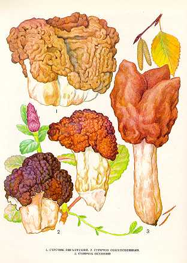

1. СТРОЧОК ГИГАНТСКИЙ
Растет в лиственных и хвойных лесах с примесью березы, преимущественно на песчаной почве, богатой гумусом, в апреле - мае, группами, реже одиночно.
Плодовое тело очень крупное, 5-
Ножка беловатая, внизу грязно-белая,
водянистая, полая, 3-
Гриб условно съедобен. Используется для приготовления только после отваривания и удаления отвара.
2. СТРОЧОК ОБЫКНОВЕННЫЙ.
Растет в лиственных и хвойных лесах на
песчаной незадерненной почве, близ опушек леса, на вырубках вдоль дорог, в
молодых посадках ранней весной, сразу же после схода снега. Встречается
довольно часто, но не обильно.
Плодовое тело до
Ножка 3—6 см длины, 1,5—
Гриб условно съедобен, третьей категории. Употребляется свежим,
пригоден для сушки.
3. СТРОЧОК ОСЕННИЙ.
Встречается в сыроватых сосновых и
сосново-березовых лесах, близ дорог, на опушках и вырубках в сентябре —
октябре. Растет небольшими группами или одиночно, редко и не обильно.
Шляпка 5—6 см высоты, 7—
Ножка 4—10 см длины, 1,5—
Гриб условно съедобен, четвертой категории. Употребляется
свежим, пригоден для сушки.
Строчки и лопастники
содержат ядовитое вещество.
При употреблении их в пищу без предварительной подготовки они могут
вызвать серьезное отравление.
Считается особенно опасным употребление строчков
детьми, беременными женщинами, людьми пожилого возраста с больным желудком,
кишечником, печенью, почками. При отравлении появляются сильные головные боли,
рвота, понос, боли в животе, общая слабость.
Перед приготовлением грибы отваривают
и удаляют отвар. После такой обработки они
становятся безвредными.